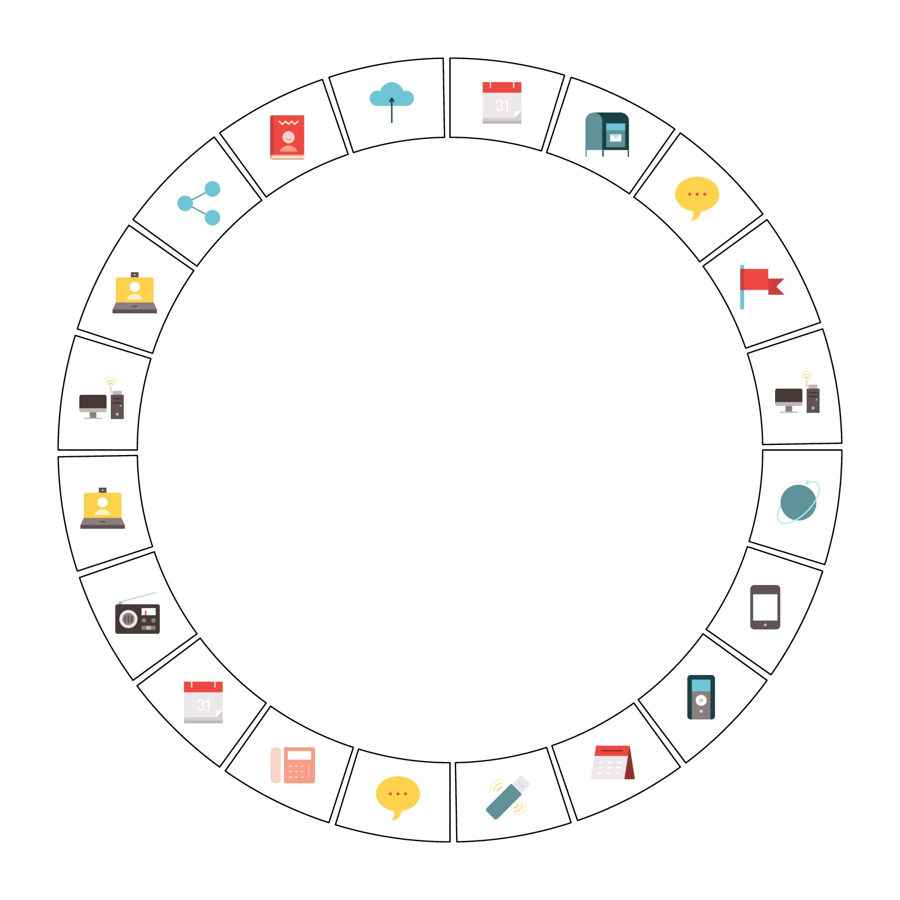

png is from http://www.flaticon.com/packs/communication-and-media-2
set.seed(123)
files = list.files("example/png/", full.names = TRUE)
library(png)
library(circlize)
circos.initialize(fa = letters[1:20], xlim = c(0, 1))
circos.track(ylim = c(0, 1), panel.fun = function(x, y) {
f = sample(files, 1)
image = as.raster(readPNG(f))
circos.raster(image, CELL_META$xcenter, CELL_META$ycenter,
width = "1cm", height = "1cm", facing = "downward")
})
circos.clear()